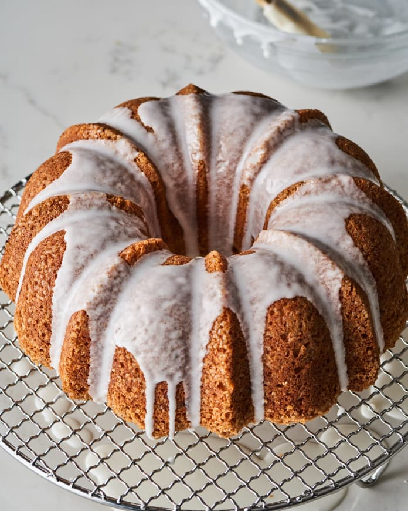

Bundt Cake
How to Make the Very Best Foolproof Bundt Cake

We all need a foolproof bundt recipe that we love and trust. One that’s easy to whip up, bakes beautifully, and slides right out of the pan every single time. It should work as both a no-stress weeknight dessert and a party-worthy showstopper, and it should taste just as great at the end of the week as it does fresh from the oven. Of course, it also needs to deliver on flavor and texture with a moist, delicate crumb.
Description
This recipe sets you up for success with a few key ingredient choices. Cake flour, which has a lower protein content than all-purpose, makes the crumb delicate and tender. Sour cream is an insurance policy to keep the cake moist. Lastly, if you happen to have a vanilla bean pod on hand, rubbing the seeds directly into the granulated sugar is a low-effort way to intensify flavor and speckle the cake with gorgeous flecks of vanilla.
Ingredients
- 3 cups (or 13 1/2 ounces by weight) all-purpose flour
- 2 cups granulated sugar
- 1 cup unsalted butter, room temperature
- 1 cup buttermilk (or sour milk)
- 4 large eggs
- 2 teaspoons vanilla
- 1 teaspoon salt
- 1 teaspoon baking powder
- 1/2 teaspoon baking soda
Steps
- Gather the cake ingredients.
- Preheat the oven to 325 F (165 C/Gas 3). Generously grease and flour a 12-cup Bundt pan or 10-inch tube pan. Make sure you get all the nooks and crannies of the Bundt pan.
- In a large bowl or the bowl of a stand mixer fitted with a paddle attachment, combine the flour, sugar, softened butter, buttermilk, eggs, vanilla, salt, baking powder, and baking soda. Beat on low speed until moistened. Increase the mixer speed to medium and beat for about 3 minutes longer.
- Spoon the batter into the prepared cake pan and spread evenly.
- Bake the cake in the preheated oven for 55 to 65 minutes, or until a toothpick inserted into the center comes out clean.
Back